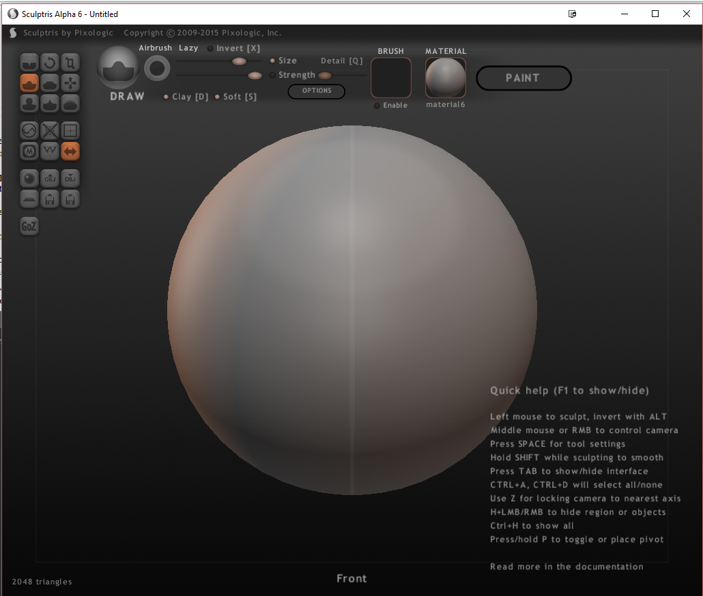
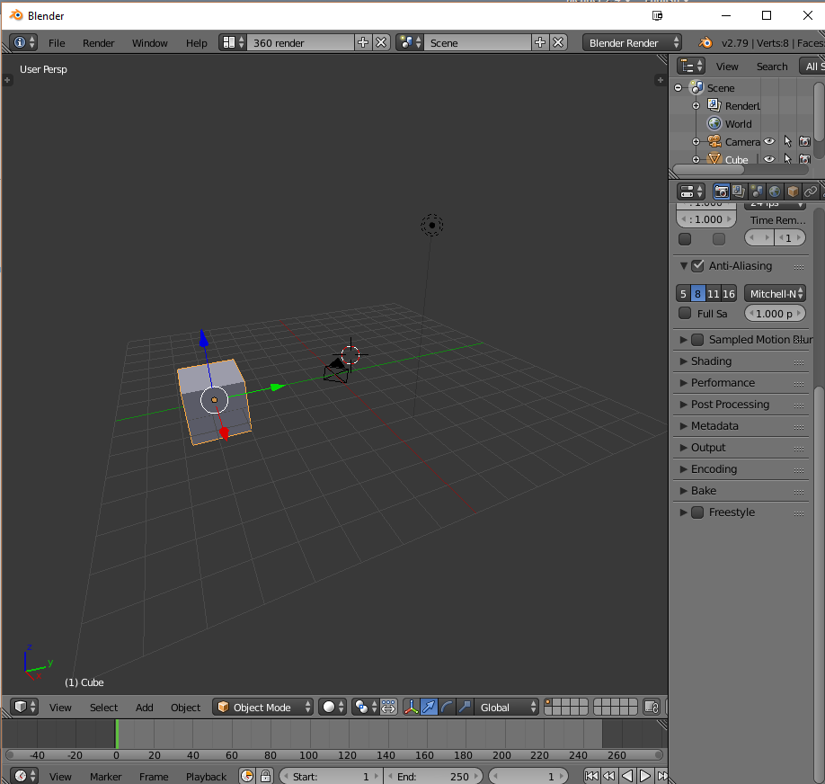
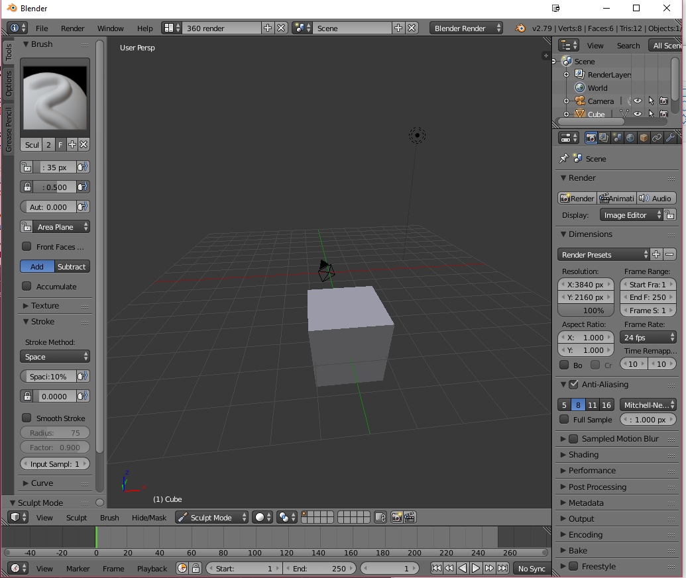
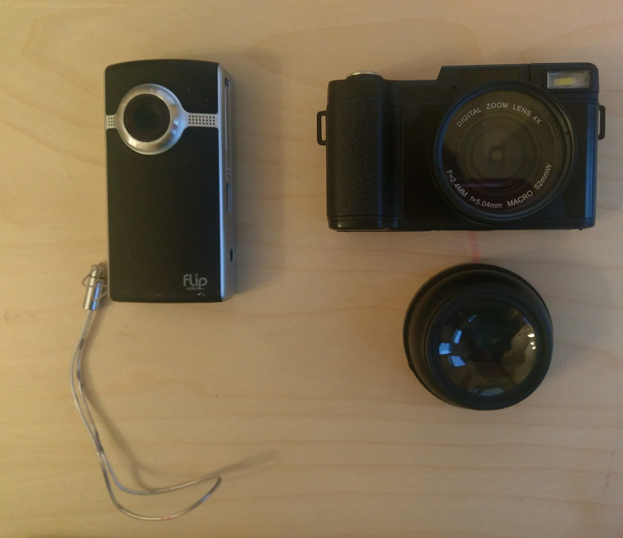
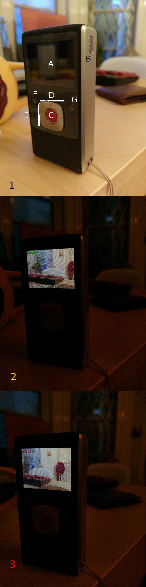

10/29/17: An Examination of Don Norman's The Design of Everyday Things Through Camcording Equipment
a. Preface For Terminology: Affordances, Signfiers, and Mappings
The concept of the affordance is a central feature of The Design of Everyday Things. To the author, Don Norman, it refers to a relationship between an object and a person, presumably the user. Within this relationship it is determined what the object is used for. For example, a table can afford that the user place a computer monitor on it or that they may sit on it. Norman draws a strict contrast between this relational concept and what most people naively refer to as its properties: "Whether an affordance exists depends [on] the properties of both the object and the agent."
For example, take the property for a camera that can take photos: it alone can take them, but in the hands of a professional photographer, the camera and the user afford the potential for artistic or very clarified photography. Alternatively, an animator may use the same device and produce stop-motion sequences, thus producing the affordance for making a movie with the same camera. On the base level, however, many of us can only afford to produce impish selfies and blurry photos of our dogs in our failed attempts at capturing the moment when Spike caught the tennis ball.
For this essay, it's important to also consider another of Norman's design concepts: the signifier. This is the property of the object which indicates to the user that certain features are available to them. They communicate how these affordances should be initiated with the given setup. A great example of this is the affordance to sculpt in two free 3D modeling programs: Sculptris and Blender. Sculptris, as the name probably suggets, is a tool offered by Pixologic which was designed with sculpting in mind: as soon as you open the program, a big, spherical 3D mesh is in front of you and on the top left of the screen are obvious cues (buttons) which correspond to different functions that the cursor can have upon clicking and dragging on the mesh. If you're unfamiliar with the program, the program will give you small prompts right over your mouse cursor when you hover over them (e.g. "Flatten", "Smooth", and "Pinch"). See below:
Blender, on the other hand, is built as a professional-grade modeling program, which, generaly speaking, means its the amount of properties are great, but the affordances by the user are largely dependent on their familiarity of complex signifying threads. Sculpting is a perfect example of this. Given the format of the default project layout, it isn't entirely obvious how to use this feature. Consider the following image:
On first glance, sculpting seems a wistful concept to the Blender novice, though it's a truly central feature of many 3D modelers' workflows. In order to do this, the user must press the Object Mode button on the second-to-bottom panel and select Sculpt Mode on the menu that pops up above it. From that point, the user can now begin sculpting in the identical mechanical fashion as in Sculptris (i.e. clicking and dragging) but with a less abstracted feature set such as "Flattening, smoothing, and pinching"; these must be manually recreated through various adjustments in the left panel. This menu, however, won't appear unless the user knows to press the hotkey "t" to reveal these tools:
The difference between these systems helps us to clearly distinguish between the mappings of two comparable systems. For Norman, a mapping is a layout of control schemes, which determine how obvious properties are signified. In Blender, the mapping is not at all clarified for sculpting, whereas Sculptris makes the system's mapping very obvious and clear to the user.
1. Camcorders: Seven Stages of Action
I'm interested in comparing two camcorders that are, or were, priced similarly at the time of their release. These will be the Flip Video HD (left) and the Rainbowday Vlogging Camcorder(right).
The Seven Stages of Action are Norman's model for how users imagine and then execute an afforded plan with a given object. The seven stages are as follows:
- A desire or the idea to accomplish something is formulated.
- Imagine alternative actions.
- Determine what can be done now with an understanding informed by one's conceptual model of the object's affordances and route of signifiers/mapping steps.
- Perform the action.
- Perceive the changed state of things/feedback from the system.
- Interpret this change - namely, name it (e.g. "I just changed the color settings of my Vlogging Camcorder").
- Evaluate it against one's expectations.
Flip HD Camcorder
This evaluation will occur by referencing the following three preview images. In respective order, section 1 is the device in its default state, 2 is its standby mode, and 3 is its recording mode. For the sake of clarity, only 1 showcases the device whereas the second two images showcase the digital interface including the video stream. Section 1 also contains six alphabetically-ordered components which correspond with the screen (1a), the power button (1b), the record button (1c), (1d) for button inputs on the horizontal axis, (1e) for button inputs on the vertical axis, (1f) for the playback button, and (1g) for the delete button.
Stage 1: A Desire Formulates
To begin, I think to myself, while walking to the subway, "Hm, I think I would love to film the subway system's components so that I have a ton of firsthand experience with which to redesign its interface. 'Why?' Dr. Richard Kline asked me to." Stage 2: What are my alternatives?
"I could very easily accomplish the same task with the reasonable safety of a Google search, with my webcam lens stylishly obfuscated by a sticker portrayal of a Unity logo. I only want their interface, after all. It can't be too difficult..." Stage 3: Determine what I can do now/Imagine a plan
"Okay, I won't be a coward. Here's the subway now. Time to take this camera out of my pocket and start to record what I need. First, I will click the power button (1b) and then the record button(1c)."
Stage 4: Perform the action.
The viewport on (1a) is in the recording state of section (3). The interface is about thirteen feed from my lens, so it is not coming into the viewport as a clear photo so, "I will zoom in and out until I find the best image using two opposing buttons along the vertical axis(e)." Thirty seconds later, after I have scoured the subway for the best angles and ideal imagery, I say to myself, "It is complete. I will now press the record button (1c) again and the old woman sitting in front of me will stop peering at me with skepticism." After recording, the viewport returns to standby mode in section (2).
Stage 5: Perceive the change
"Okay, I am looking at the standby screen (2). I will now preview this to ensure that it looks good by pressing the preview button (f) and scrolling through the images by using the two opposing buttons along the horizontal axis(d)."
Stage 6: Interpret the change
"I successfully recorded the video. Great."
Stage 7: Evaluate the change
"It looks good. I can use this and take photos of the frames for work in my research paper."
Vlogging Camera by Rainbowday
The second evaluation will occur by referencing the following group of six preview images. Respectively, section 1 is the device in its default "off" state, 2 is its default and initial "on" state, which is the photography state, 3 is its video-staging state, 4 its recording state, 5 is its preview mode, wherein the user may browse through the images and videos recorded by the device; and lastly, 6 is playback state if the item selected is a video. Again, only 1 showcases the device whereas the latter five showcase the digital interface including the video stream. Another repeated scheme is that section 1 contains multiple alphabetically-ordered components which correspond with the device's interface. These total to be nine, as some buttons were ignored in the interest of focusing on previewing and recording affordances for this setup. (1a) is the screen, (1b) is the power button, (1c) is the silver record button, (1d) is the M button that switches between modes and sits in the middle of a d-pad, (1e) are T and W buttons, which act as an digital zoom toggl, (1f) is the quick preview button and the right button on the d-pad surrounding the M button, (1g) toggles if the display is on or off, (1h) is the delete key and the down button on the aforementioned d-pad, and (1i) is the menu button.

Stage 1: A Desire Formulates
To begin, I think to myself, while skateboarding, "I want to film myself cruising down a hill." Stage 2: What are my alternatives?
"I could use my phone, but I definitely want to use this awesome new Vlogging camera." Stage 3: Determine what I can do now/Think up a plan
"My camera is out of my bag and I will start to record some cool footage. First, I will click the power button (1b), the M mode button (1d), and then the record button(1c). Alternatively, before recording, I can press (1i) to enter the menu to adjust the settings on the camera." These include the options which are toggled using the d-pad along the horizontal axis (1f) and can be chosen using the M button. These in clude Video Size (Full HD: 1920x1080, HD: 1280x720, VGA: 640x480), Mode Set (Auto, Sport, Night, Portrait, Landscape, Backlight, Party, Beach, and High ISO: High Sensitivity), Beauty Face (i.e. face recognition with an auto-focus on that point; On or Off), White Balance (Auto, Daylight, Cloudy, Tungsten, or Fluorescent), Exposure (+3, +2, +1, 0, -1, -2, or -3), ISO (Auto, 100, 200, or 400), Anti-Shake (i.e. image stabilization; On or Off), and Setup (Language, Set Date, Power Save On/Off, Sound Preferences, Light Frequency Settings for 60 or 50hz, Format Settings, and Set to Default).
Stage 4: Perform the action.
The camera initially resembles 2, then 3 after I press M. Next, I press (1c) and the viewport resembles 4, with a signifier to stop the recording and a yellow circle on the top panel of the screen to indicate that I am recording. After a couple of minutes, I walk over to the camera that I left and press the record button (1c) to stop the recording.
Stage 5: Perceive the change
I want to preview my video so I can either press 1(f) to preview the video or M (1d) to switch modes to see screen 6. It's the first video in the array of videos on my device, so I press (1c) to play it, as is signified on the preview screen by the red circle highlighted in white next to the word "Play" and an arrow pointing towards it. I fell because I wasn't riding on my strong side, but it was a funny video. So I am debating deleting it but if I wanted to I must press (1h), or down on the d-pad, to delete the video after a boolean confirmation.
Stage 6: Interpret the change
"I successfully recorded my video."
Stage 7: Evaluate the change
"Well, it will make someone on YouTube laugh, I guess. I should probably try again, though, so I get a good one to edit with this"
2. Conclusion: Feedback and Constraints
The affordances offered by the Flip HD camera are obvious and easy to understand. It does not require a manual and can be kept in one's pocket, which is in stark contrast with Rainbowday's Vlogging Camcorder. These facts account for its huge popularity before Cisco cynically acquired the brand to boast the vitality of its stock before discontinuing the product in 2009 (Reardon, 2011).
However, this product is inconsistent at best with regards to image quality and its settings are not necessarily easier to access. Specifically, the sparse customization option, (which include language, date, and a boolean for audio feedback upon recording and all other button use), is available for about two seconds on what might otherwise be called a loading screen. A signifier indicates that the user can press the record button to enter into its barebones menu.
Two more concepts of Mason's deserve mention here: feedback and constraints. Feedback is generally understood to be a cue that lets the user know that an action has been completed, such as when a button has been pressed to navigate through the menu or when a video has begun recording. Generally, I have never seen any value in these with regards to using a camera of any kind. I'd prefer to be clandestine with my usage so as not to influence others around me. When I am recording a skateboarding session, I don't want others to know that I am recording because I want to feel natural with regards to the amount of attention I get. When recording in the subway, this is equally important if not moreso because the underground culture is decidedly tense if not completely guarded. Though these both come equipped with these options, they are utterly useless and culturally inappropriate in New York City.
The fact that this is a bad design choice in a city like New York could present a considerable constraint to the user if the menu system is not overt and easy to access. The Vlogging camcorder, albeit bulkier, has a much more readily accessible and highly signified button to access the menu: a button named "MENU". The Flip, on the other hand may contradict what I assume to be its mission statement: to shoot and run without any detection. Its own "bleeps" and "bloops" are its Achilles heel presented as a default setting.
Aside from this wonton lapse in existential reasoning, the Flip HD makes good use of its form factor and lightning speed user experience. Though the Vlogging camcorder affords the user a litany of options which are arguably peripheral to the act of recording specifically, it does not have the design such that the user can start without spending a few minutes to learn its mappings, memorize some signifiers, and maybe peek at the manual. What makes it equally odd is that though it is a camcorder, its default state upon powering on is photography mode.
It does, however, offer the user the option to flip the screen back to the user. With its included wide(r)-angled lens, it is undoubtedly the perfect camera for a would-be content creator on a platform like Youtube or Patreon.